1 · Architecture overview
Governance: demo banner · RBAC · audit · human medical review gates
│
├── Medical Information (inquiry lifecycle)
├── Field Medical (MSL / coaching / simulations / analytics)
├── Knowledge Network (search · review · reuse)
├── Evidence Library (illustrative metadata; untrusted until review)
├── AI Agent Center (16-agent registry + status integrity)
├── Workflow Studio * (role pathways + canvas; no live execution)
└── Data Room * (auth-gated illustrative packages)
* Demo-preview modules (feature screenshots). Synthetic only.
OpenAI live literature / generative HCP is not implemented. Demo responses are deterministic and allowlisted.
Knowledge ROI figures are scenario estimates, not validated savings.
2 · Product shell & dashboard
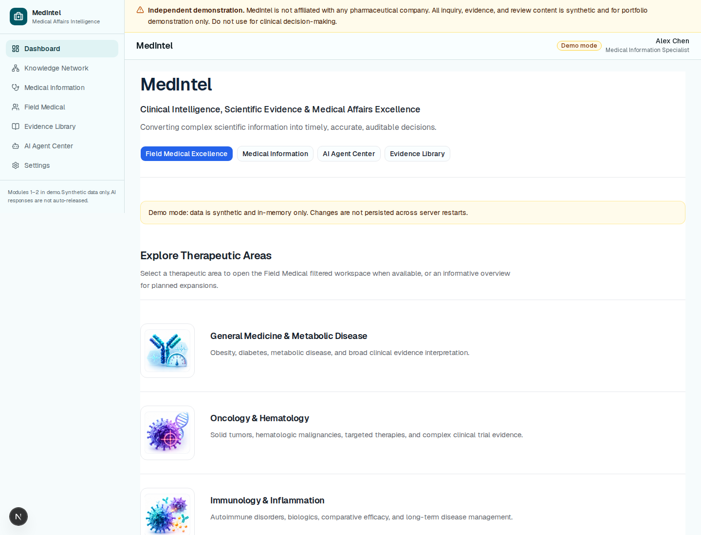
3 · Medical Information
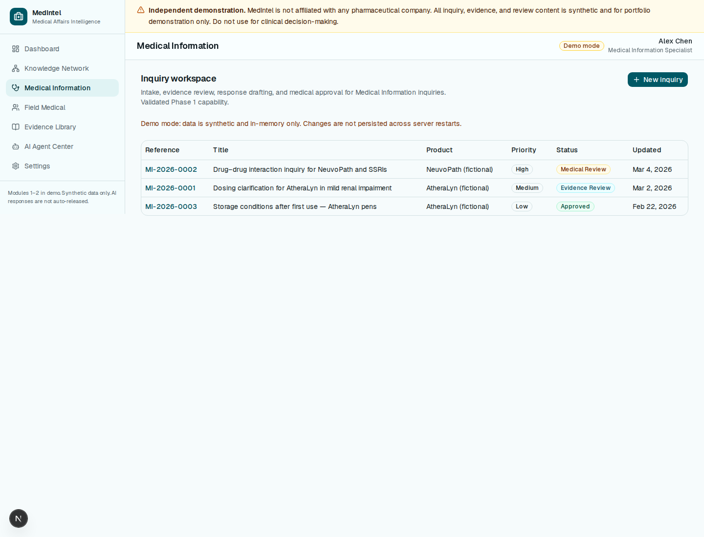
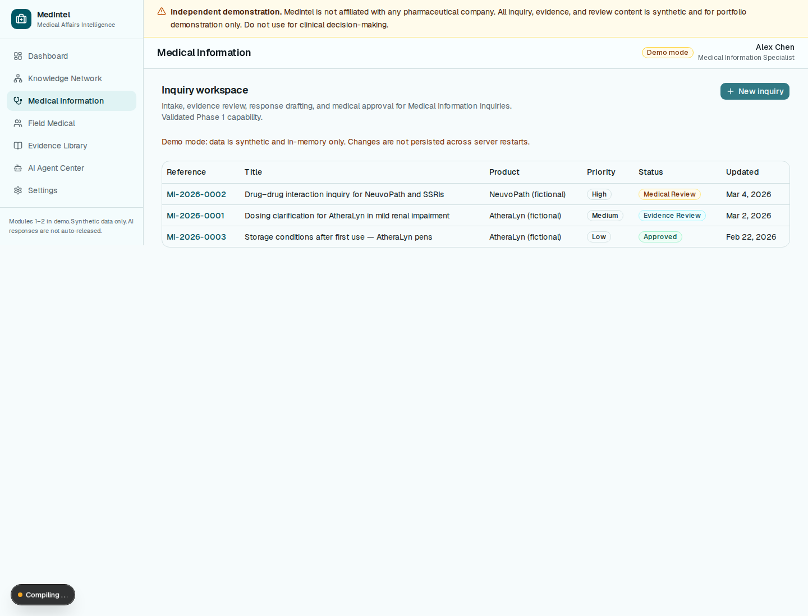
- Fictional products labeled explicitly (e.g. NeuvoPath, AtheraLyn).
- Claim-level draft review; responses never auto-released.
4 · Field Medical Excellence
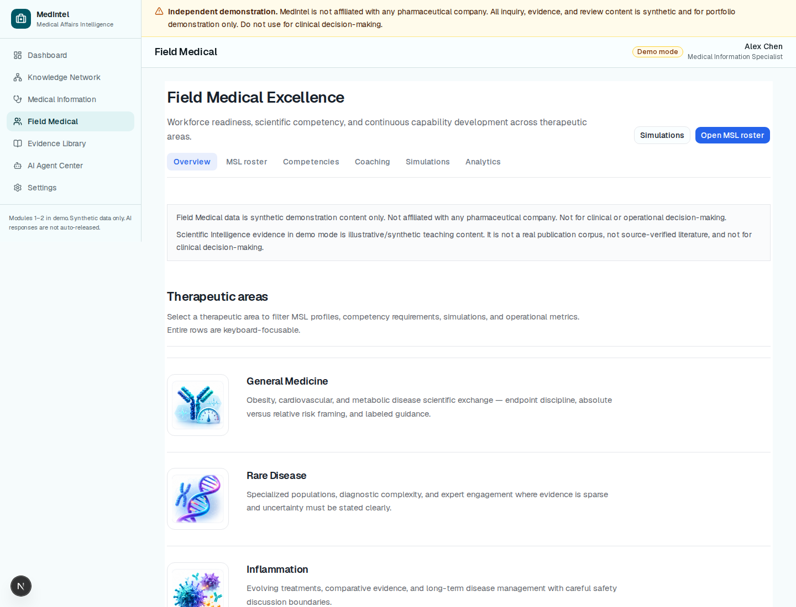
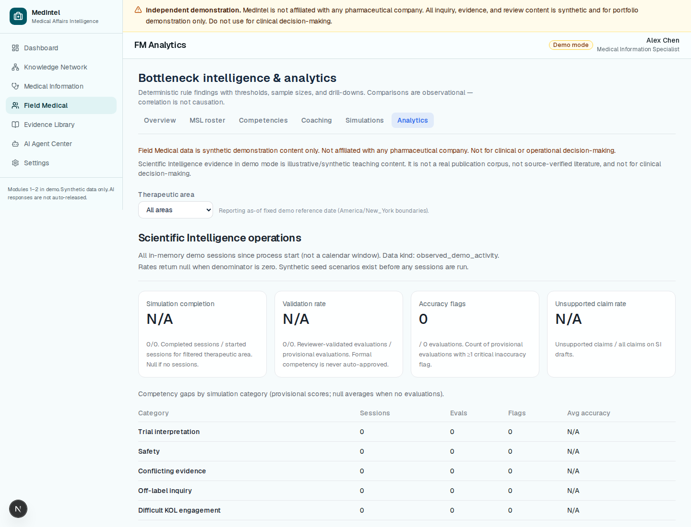
- Simulation scores do not auto-certify formal readiness.
- Coaching → later score links are observational only.
5 · Scientific Knowledge Network
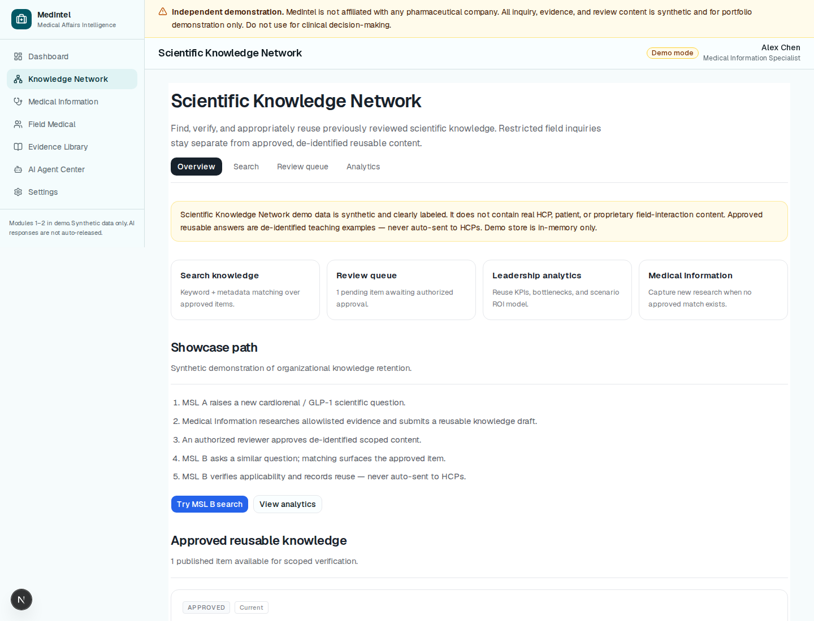
6 · AI Agent Center
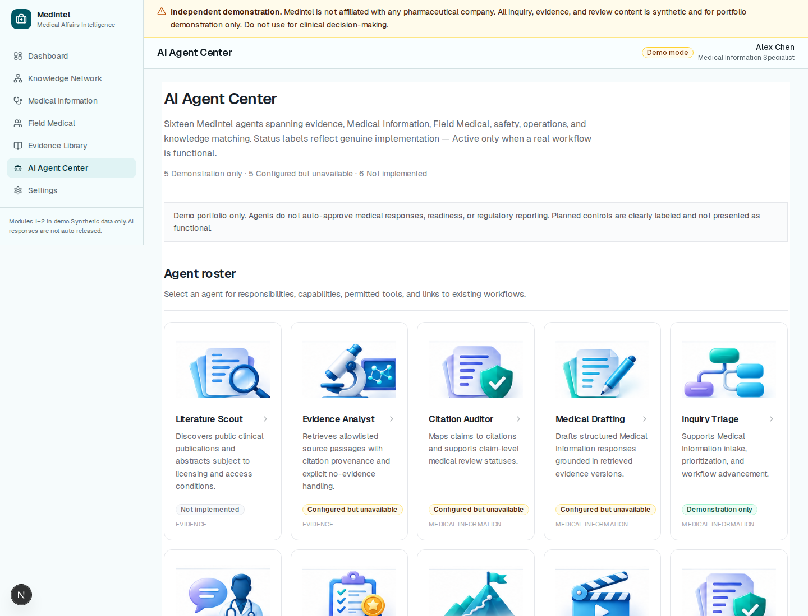
- Active demo examples: Inquiry Triage, KOL Simulator, Coaching Advisor, Bottleneck Analyst.
- Agents never auto-approve medical responses or regulatory reporting.
7 · Workflow Studio (demo preview)
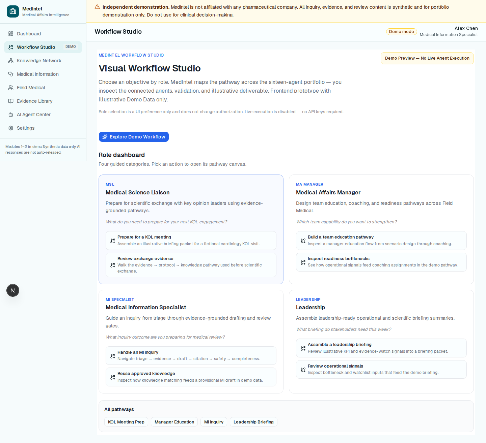
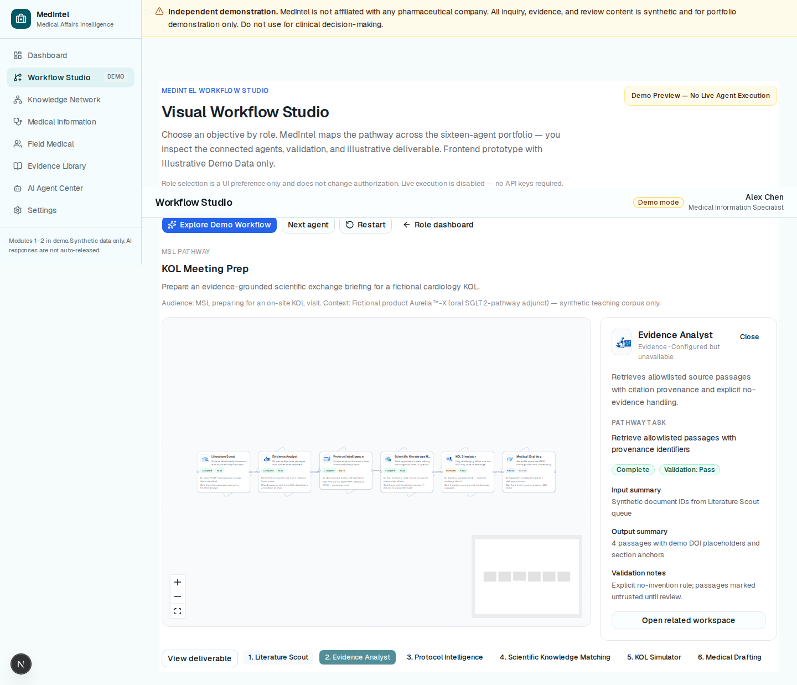
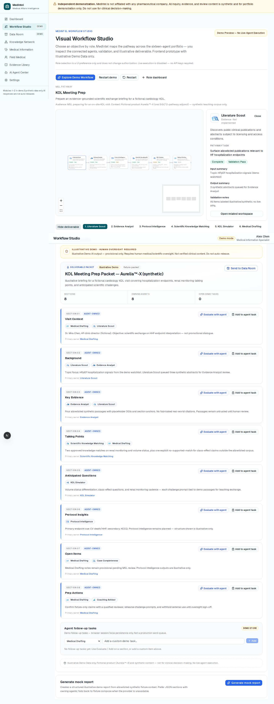
8 · Data Room (demo preview)
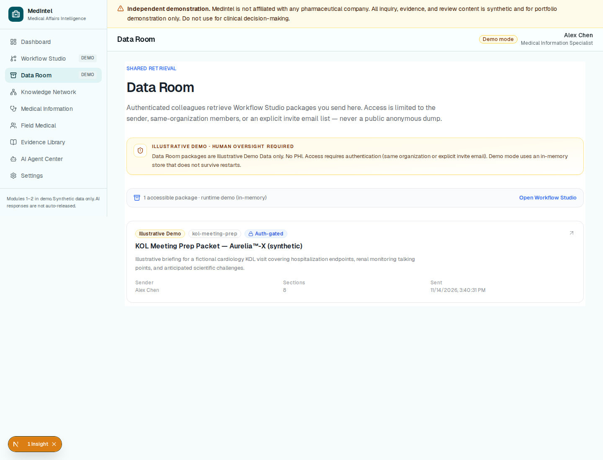
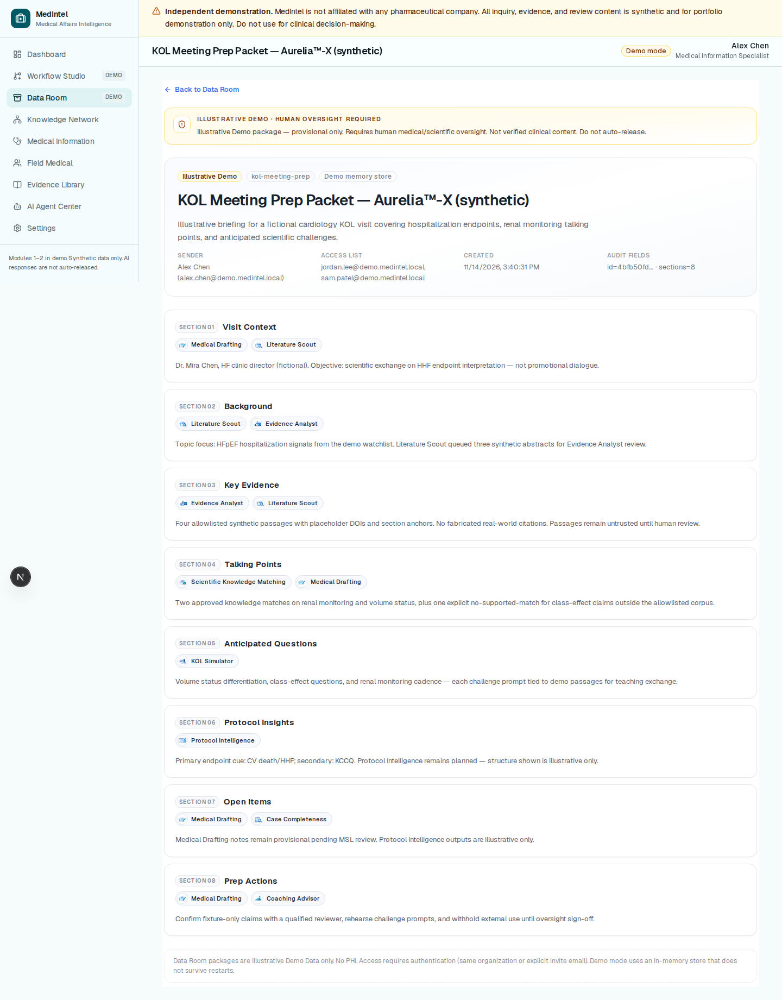
9 · Governance checklist
- Independent demonstration — not affiliated with any pharmaceutical company.
- All showcase screenshots use synthetic / illustrative content.
- No fabricated real literature citations; placeholders are teaching-only.
- Not for clinical decision-making; provisional AI/draft content requires human oversight.
- Demo mode state is in-memory; unsuitable as a concurrent public recruiter sandbox without further isolation work.
- Do not claim full enterprise production readiness from this portfolio alone.